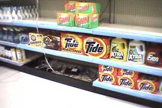
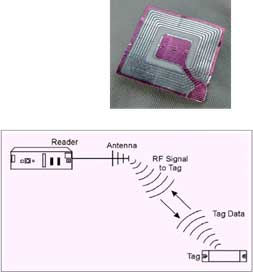

RAID Labs was established in 2011 under Dr. Erick Jones at the University of Texas at Arlington. Immediately after gaining the labs, setup began and experiments were being issued undergraduates and PHD students alike. Current projects are involved in the areas of hospitals as well as factory lines, to name a few. The lab is currently also working on phone apps to help identify RFID tags. Some of the labs other focuses are:
• Supply Chain Logistics/Supply Chain (warehouse location) Analysis for a city governmen.
• Engineering Management-Productivity tool that measures the productivity of engineers and knowledge workers from behavioral characteristics.
• RFID in the Mechanical Contracting Industry-Asset tracking development funded by the Mechanical Contracting Educational Research Fund (MCERF).
RAID Labs is made up of two high class facilities: the RFID Lab and the Auto ID Lab.
• Future - Transportation Logistics Lab
• Equipment (Previous/Planned) Equipment Military grade Fixed and Mobile Active RFID Systems (Lockheed Martin -Savi technologies, RF Code)
Industry grade high speed automated conveyor (Hytrol conveyor)
Industry recognized RFID edgeware, ERP and WMS systems, (Global Concepts)
Walmart/DOD mandated standard fixed and mobile passive RFID systems (Alien Technologies, Matrics)
Hospital tracking location systems (Ubisense Ultra Wide Band Real Time Location System)
Building modifications - automated locks and MavID
Facilities and Environment
The healthcare research cell within the RFID laboratory contains Smart hospital beds, mannequins, and custom-built multi-frequency (433 MHz, 915 MHz, and 2.4 GHz) RFID Smart Shelf for researching the applications of automatic identification technologies in healthcare sector.
Real World Applications
Logistics
- RFID offers logistics benefits of increasing visibility and improving the resolution by which we track and measure the activities of this service.
Security
- RFID technology can provide independent, non-stop systems for security, parking, and access control.

Smart Shelves
- The RFID readers scan the contents of the shelves and, via computer, alert store employees when supplies are running low or when theft is detected, said Gillette spokesman Paul Fox.
How RFID Works

1. The antenna of the interrogator (reader) emits radio signals:
– EM field transmitted can be continuous.
– Antennas come in a variety of shapes/sizes.
• Can be built-in or external.
• Circular polarization of reader antenna allows any tag antenna orientation.
2. Transponders (tags) respond with their unique code:
– Microchip / Integrated Circuit.
– Antenna: copper or aluminum coil.
– Encapsulating material: glass or polymer.
3. Reader receives and decodes tag information and sends it to a computer via standard interfaces:
– Fixed or portable.
– Software available to filter data and monitor the network.
RFID in Healthcare
RFID has been envisioned in Healthcare for:
- Patient Tracking
• Nurses
• Surgeons
- Inventory Tracking
• Assets
- IV Pumps
• OR Sponge Tracking
- Integration with Barcodes for
• Electronic Medical Record Enablement
- Current Research in Medical Error Reduction
Auto ID Lab
Room 309 Engineering Building
Business setting, multiple handheld RFID readers.
• Large Auto ID panels
• Industry recognized RFID edgeware, ERP and WMS systems, (Global Concepts)
• Building modifications - automated locks and MavID
Facilities and Environment
The healthcare research cell within the Auto ID Deployment Labs includes testing of unique operations using barcodes, 2D-barcodes, etching, maxi-code, NFC devices and visual cameras.
Military grade Fixed and Mobile Active RFID Systems (Lockheed Martin -Savi technologies, RF Code)
{kind=link}